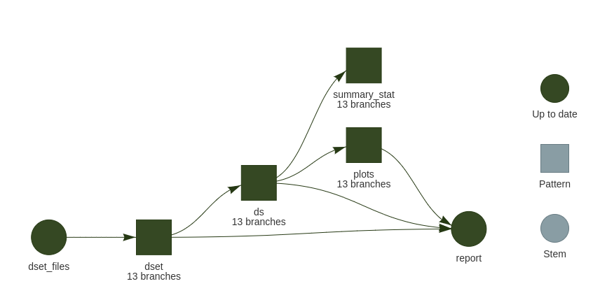

A workflow manager for
Targets is an package that is
Function-oriented Make-like declarative workflows for
Main author: William Landau. See the targets manual for an extensive documentation.
The goal is to create so-called targets that are significant steps that linked between one another. Those links create the dependencies, and once one target run successfully and its upstream dependencies are up-to-date, they are no reason to run it again. Time/Computing intensive steps are then cached in the store.
Invalidation of a target arises when:
- Upstream targets invalidate (or input files checksum for special
format = "file") - Code of the targets changed
- Package used was updated
Example dataset: datasauRus 
The great package datasauRus offers a fake table which consists of 13 dataset (each of 142 observations) with 2 values x and y:
For each the 4 demos, we use different versions of the same data:
- One tabulated-separated-value (tsv) file of 1847 lines (1846 observations + 1 header)
- Same as before but with plotting functions in a separate script
- One folder that contains 13 tsv of 143 lines
- Three folders of 2, 4 and 7 tsv of 143 lines each
Multiple projects in one folder
This is supported by targets and described in the manual: projects. A config YAML file, _targets.yaml describe the 4 different projects, specifying the name of both:
- the
targetsscript (actual definition oftarget) - the store folder name (where objects are cached and described)
Additional options or inheritance can be specified too.
Content:
Packages needed
Those demos are using several packages, you can get the necessary ones by using renv. Once the repo cloned/downloaded:
to install a local library of the key packages.
One file, linear pipeline
Using the original tsv from the package datasauRus itself. targets allows to track the timestamp of an URL.
Here we track https://raw.githubusercontent.com/jumpingrivers/datasauRus/main/inst/extdata/DatasaurusDozen-Long.tsv.
See the complete targets script in _targets_ds_1.R and displayed dependencies as directed acyclic graph:

targets encourages using literate programing where a Rmarkdown document higher level comments and code, dependencies are based on the parsing of the tar_read() and tar_load() calls within it. This can be used as smart caching system where help focusing on the analysis report, leaving the computation for the script _targets.R.
For this first example, the corresponding Rmd is ds1.Rmd. It will be rendered by the pipeline (target definition in tar_render()).
To run this example:
For the first run, `tar_make()1 should output something like:
> targets::tar_make()
• start target ds_file
• built target ds_file [0.695 seconds]
• start target ds
• built target ds [0.176 seconds]
• start target anim
• built target anim [48.762 seconds]
• start target all_facets
• built target all_facets [0.007 seconds]
• start target gif
• built target gif [0.005 seconds]
• start target report
• built target report [4.144 seconds]
• end pipeline [54.083 seconds]The GIF animation takes roughly one minute, so it would be cumbersome to wait this time at each Rmarkdown knitting process. It is a good case for targets, the GIF will be re-run only if needed while you polish the Rmd report.
See the output of re-reruning tar_make() again:
0.27 seconds versus 54.
Cleaner coding with sourcing functions
_targets_ds_fun1.R is similar as _targets_ds_1.R except that plotting functions were placed in R/plotting.R which is sourced before the targets definition
Targets definition is then cleaner to read:
list(
# track if distant file has changed
tar_url(ds_file, "https://raw.githubusercontent.com/jumpingrivers/datasauRus/main/inst/extdata/DatasaurusDozen-Long.tsv"),
tar_target(ds, read_tsv(ds_file, show_col_types = FALSE)),
tar_target(all_facets, facet_ds(ds)),
# animation is worth caching ~ 1 min
tar_target(anim, anim_ds(ds),
packages = c("ggplot2", "gganimate", "gifski")),
tar_file(gif, {
anim_save("ds.gif", animation = anim, title_frame = TRUE)
# anim_save returns NULL, we need to get the file output path
"ds.gif"},
packages = c("gganimate")),
tar_render(report, "ds1.Rmd")
)One folder, dynamic branching
Often, input files are more than one. Of course, you don’t want to list them by hand and one want to apply similar treatment to each of them. Moving away from for loops, we embrace functional programming and let targets branching over the list of files and dynamically for it adapts to how many are present.
This is called dynamic branching and it contains the magic aggregation (like bind_rows()) when calling the target name.
On the filesystem, the folder data contains 13 files:
Which once tracked by targets are:
> tar_read(dset) |>
enframe()
# A tibble: 13 × 2
name value
<chr> <chr>
1 dset_e814d3a7 data/dset_1.tsv
2 dset_96886f69 data/dset_10.tsv
3 dset_a4c9d9df data/dset_11.tsv
4 dset_02e8e253 data/dset_12.tsv
5 dset_39f18392 data/dset_13.tsv
6 dset_d74af7a4 data/dset_2.tsv
7 dset_55280675 data/dset_3.tsv
8 dset_80822375 data/dset_4.tsv
9 dset_020f0640 data/dset_5.tsv
10 dset_0577d04d data/dset_6.tsv
11 dset_66982b15 data/dset_7.tsv
12 dset_3c9c9095 data/dset_8.tsv
13 dset_fe11a7b7 data/dset_9.tsv Finally, the DAG is:

You see that all targets appears in blue, so outdated. This is the expected behavior of tar_files(). We don’t know in advance how many (if any) files are present, so the listing is checked all the time and downstream targets are then also outdated.
However, the downstream targets are re-run only if needed
- If input files changed
- If code for those targets changed.
See example of re-running tar_make(). dset_files was run again, but no files were different so all the rest is skipped and the whole pipeline took 1.1 second.
> targets::tar_make()
• start target dset_files
• built target dset_files [0.702 seconds]
✔ skip branch dset_6630d1f3
✔ skip branch dset_f10c2c43
✔ skip branch dset_c79e8ff6
✔ skip branch dset_b1eac8ed
[...]
✔ skip branch plots_01ca2c35
✔ skip branch plots_9fc19e45
✔ skip branch plots_01f427e3
✔ skip pattern plots
✔ skip target report
• end pipeline [1.172 seconds]Dynamic branching scales great on the DAG since the number of branches can be reported, no additional items are created. to avoid this, we can switch to tar_files_input() which also automatically groups input files into batches to reduce overhead and increase the efficiency of parallel processing..
See the DAG with tar_files_input():

Several folders, dynamic within static branching
We created a folder structure as we often have to deal with, 3 sub-folders of data:
Especially with static branching, it is meaningful to check which commands are planned. See the manifest for this example:
> tar_manifest() |> print(n = Inf)
# A tibble: 21 × 3
name command pattern
<chr> <chr> <chr>
1 filenames_circles "fs::dir_ls(\"circles\", glob = \"*tsv\")" NA
2 filenames_others "fs::dir_ls(\"others\", glob = \"*tsv\")" NA
3 filenames_lines "fs::dir_ls(\"lines\", glob = \"*tsv\")" NA
4 files_circles "filenames_circles" map(fi…
5 files_others "filenames_others" map(fi…
6 files_lines "filenames_lines" map(fi…
7 ds_circles "read_tsv(files_circles, show_col_types = FALSE)" map(fi…
8 ds_others "read_tsv(files_others, show_col_types = FALSE)" map(fi…
9 ds_lines "read_tsv(files_lines, show_col_types = FALSE)" map(fi…
10 summary_stat_circles "summarise(ds_circles, m_x = mean(x), m_y = mean(y))" map(ds…
11 plots_circles "ggplot(ds_circles, aes(x, y)) + geom_point()" map(ds…
12 summary_stat_others "summarise(ds_others, m_x = mean(x), m_y = mean(y))" map(ds…
13 plots_others "ggplot(ds_others, aes(x, y)) + geom_point()" map(ds…
14 plots_lines "ggplot(ds_lines, aes(x, y)) + geom_point()" map(ds…
15 summary_stat_lines "summarise(ds_lines, m_x = mean(x), m_y = mean(y))" map(ds…
16 patch_plots_circles "wrap_plots(plots_circles) + plot_annotation(title = stringr::str_split_i(tar_name(), \n \"_\", -1))" NA
17 patch_plots_others "wrap_plots(plots_others) + plot_annotation(title = stringr::str_split_i(tar_name(), \n \"_\", -1))" NA
18 patch_plots_lines "wrap_plots(plots_lines) + plot_annotation(title = stringr::str_split_i(tar_name(), \n \"_\", -1))" NA
19 stat_summaries "dplyr::bind_rows(summary_stat_lines = summary_stat_lines, \n summary_stat_circles = summary_stat_ci… NA
20 plots_agg "wrap_plots(list(patch_plots_lines = patch_plots_lines, \n patch_plots_circles = patch_plots_circles… NA
21 report "tarchetypes::tar_render_run(path = \"ds3.Rmd\", args = list(input = \"ds3.Rmd\", \n knit_root_dir =… NA You see that we get meaningful names based on the 3 folders listed. Still we get dynamic branching for reading files inside each folder. The same treatment is performed on each 3 input folders but when we want/need to combine the parallel branches for a relevant aggregation, we use tar_combine(). Example of both aggregating tibbles or plots are exemplified as depicted below:

Demo repository
All the corresponding files are available in the Gitlab repository